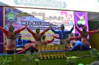
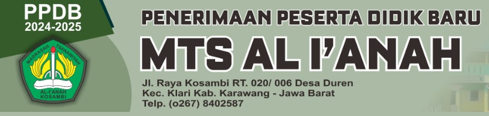

Menu
Top Navigation
Breaking News
MTs AL-I`ANAH LAKSANAKAN ANBK 2024
PPDB MTs AL-I`ANAH KOSAMBI TAHUN PELAJARAN 2024-2025
Silaturrahmi dan Pertemuan Orangtua Siswa Kelas VII MTs Al-I`anah Kosambi Tahun Pelajaran 2022-2023
Masa Ta`aruf Siswa Madrasah (MATSAMA) Tahun Pelajaran 2022-2023
MTs Al-I`anah Gelar Pentas Seni dan Kenaikan Kelas
Sosialisasi Perundungan (Bullying) MTs Al-I`anahKosambi
Pemilihan Ketua dan Wakil Ketua OSIS MTs AL-I`ANAH Kosambi
Selamat Datang di MTs Al I`anah
Main Navigation
Beranda
Beranda
Profil
Sambutan Kepala Sekolah
Sejarah Singkat Sekolah
Visi dan Misi
Struktur Organisasi
Akreditasi
Kontak Kami
Berita
Prestasi
Umum
Pendidikan
Karya
Galeri
Foto
Video
Data Siswa
Data Siswa
Mobile Navigation
Close
Beranda
Profil
Sambutan Kepala Sekolah
Sejarah Singkat Sekolah
Visi dan Misi
Struktur Organisasi
Akreditasi
Kontak Kami
Berita
Prestasi
Umum
Pendidikan
Karya
Galeri
Foto
Video
Data Siswa
Kategori "Prestasi"
Belum ada berita pada kategori ini.

Sidebar
Tabs Widget
Berita
Popular
Random
Ke Atas
.png) MTs AL-I`ANAH LAKSANAKAN ANBK 2024
MTs AL-I`ANAH LAKSANAKAN ANBK 2024 PPDB MTs AL-I`ANAH KOSAMBI TAHUN PELAJARAN 2024-2025
PPDB MTs AL-I`ANAH KOSAMBI TAHUN PELAJARAN 2024-2025 Silaturrahmi dan Pertemuan Orangtua Siswa Kelas VII MTs Al-I`anah Kosambi Tahun Pelajaran 2022-2023
Silaturrahmi dan Pertemuan Orangtua Siswa Kelas VII MTs Al-I`anah Kosambi Tahun Pelajaran 2022-2023 Masa Ta`aruf Siswa Madrasah (MATSAMA) Tahun Pelajaran 2022-2023
Masa Ta`aruf Siswa Madrasah (MATSAMA) Tahun Pelajaran 2022-2023 Sosialisasi Perundungan (Bullying) MTs Al-I`anahKosambi
Sosialisasi Perundungan (Bullying) MTs Al-I`anahKosambi Pemilihan Ketua dan Wakil Ketua OSIS MTs AL-I`ANAH Kosambi
Pemilihan Ketua dan Wakil Ketua OSIS MTs AL-I`ANAH Kosambi Selamat Datang di MTs Al I`anah
Selamat Datang di MTs Al I`anah